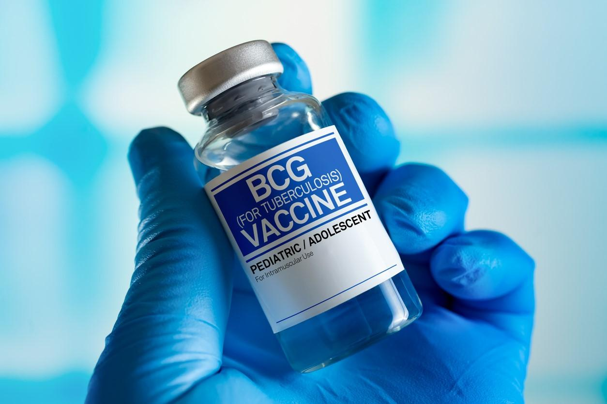
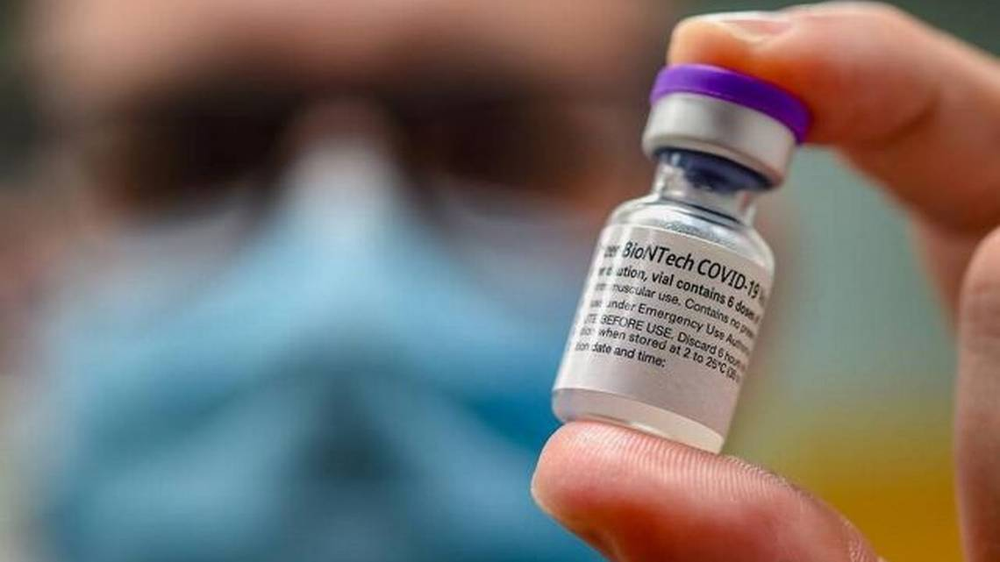
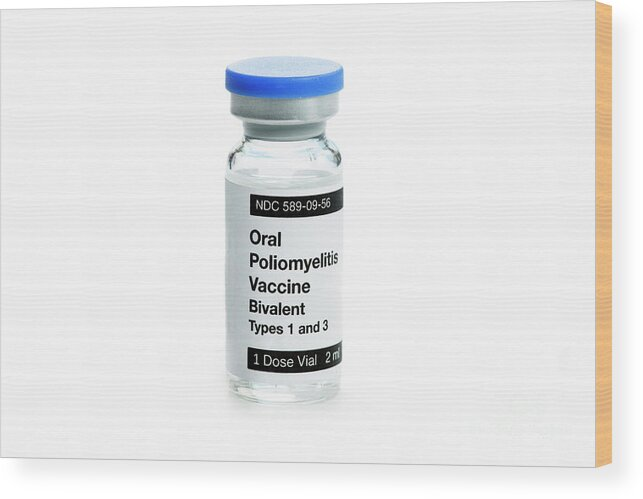
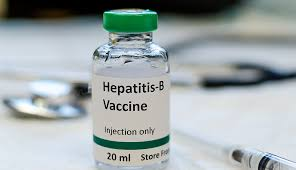
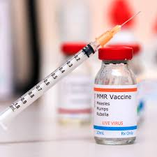
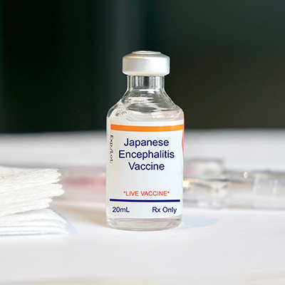

Vaccinations
|
|  |
Bacille Calmette Guerin-BCG
The World Health Organization (WHO) initiated the formulation of international requirements for the manufacture and control of the Bacille Calmette-Guérin (BCG) vaccine in response to the growing challenges posed by tuberculosis (TB), especially in developing countries. TB, caused by Mycobacterium tuberculosis (Mtb), remains a significant global health threat, disproportionately affecting impoverished populations. The rise of TB cases, exacerbated by factors like the HIV/AIDS pandemic and drug resistance, has strained existing control strategies.
Despite its limitations, the BCG vaccine, in use for over 80 years, remains a cornerstone of TB prevention, administered to over 80% of neonates and infants in countries with national immunization programs. While it provides protection against specific forms of TB in children, it doesn't prevent primary infection or reactivation of latent pulmonary infection, which is a significant source of transmission.
The relationship between Mtb and the human host is intricate and not fully understood. While promising experimental vaccines are under development, their routine implementation is still years away. Hence, maximizing the effectiveness of the BCG vaccine is emphasized as an interim measure
From: W.H.O |
|  |
Pentavalent Vaccine
Indications: The vaccine is indicated for preventing tetanus, diphtheria, pertussis, hepatitis B, and severe Haemophilus influenzae type B infections in children from 6 weeks to 7 years during primary vaccination.
Composition and Administration: It's a pentavalent vaccine combining toxoids and vaccines for the mentioned diseases. Administered via intramuscular injection in the thigh for children under 2 and in the deltoid muscle for those over 2, avoiding the gluteal muscle.
Dosage and Schedule: Neonates receive 3 doses, 4 weeks apart, preferably before 6 months, starting at 6 weeks of age. If the first dose is delayed, a 0-1-6 schedule is recommended.
Contraindications and Adverse Effects: Avoid in case of allergic reactions to previous doses or severe acute febrile illness. Potential adverse effects include mild local reactions, fever, malaise, headache, myalgia, and rarely, anaphylactic reactions.
Precautions: Postpone vaccination for severe acute febrile illness; minor infections don't preclude vaccination. When administering simultaneously with other vaccines, use separate syringes and injection sites.
Other Forms: Additionally available as a trivalent or tetravalent vaccine for primary vaccination in children under 7, and a bivalent Td vaccine for older children, adolescents, and adults.
From: Medical Guidelines Organization
|
|  |
Oral Polio Vaccine - OPV
The Oral Polio Vaccine (OPV type 1) is a live, oral, monovalent vaccine provided in vials containing 20 doses. It's intended for administration orally, with two drops directly into the mouth from a dropper or dispenser, suitable for children aged 0 to 5 years. To mitigate the bitter taste, drops can be placed on a sugar lump or in syrup for older children. Care must be taken to avoid contamination of the dropper.
Once opened, multi-dose vials should be stored under recommended cold chain conditions. Used vials can be stored for up to 4 weeks, provided certain conditions are met. The vaccine is indicated for Supplementary Immunization Activities (SIAs) to interrupt type 1 poliovirus transmission in endemic areas.
For storage, the vaccine should be kept at temperatures not exceeding -20°C until the expiry date, and it remains potent for up to six months between +2°C and +8°C. Color changes in plastic tubes due to dry ice storage do not affect vaccine quality.
From: Unicef |
|  |
Hepatitis-B3
The hepatitis B vaccine is a safe and effective vaccine that is recommended for all infants at birth and for children up to 18 years. The hepatitis B vaccine is also recommended for adults living with diabetes and those at high risk for infection due to their jobs, lifestyle, living situations, or country of birth. Since everyone is at some risk, all adults should seriously consider getting the hepatitis B vaccine for a lifetime protection against a preventable chronic liver disease.
The hepatitis B vaccine is also known as the first “anti-cancer” vaccine because it prevents hepatitis B, the leading cause of liver cancer worldwide.
If you have a current HBV infection (HBsAg positive) or have recovered from a past HBV infection, the hepatitis B vaccine series will not benefit you or clear the virus. However, the vaccine can provide a lifetime of protection for loved ones who do not have hepatitis B and get the vaccine as soon as possible. Testing is the only way to know if you or your loved ones have a current infection or have recovered from a past infection.
From: HEPB Organization
|
|  |
Measels Vaccine
Measles is a highly contagious disease caused by a virus. It spreads easily when an infected person breathes, coughs or sneezes. It can cause severe disease, complications, and even death.
Measles can affect anyone but is most common in children.
Measles infects the respiratory tract and then spreads throughout the body. Symptoms include a high fever, cough, runny nose and a rash all over the body.
Being vaccinated is the best way to prevent getting sick with measles or spreading it to other people. The vaccine is safe and helps your body fight off the virus.
Before the introduction of measles vaccine in 1963 and widespread vaccination, major epidemics occurred approximately every two to three years and caused an estimated 2.6 million deaths each year.
An estimated 136 000 people died from measles in 2022 – mostly children under the age of five years, despite the availability of a safe and cost-effective vaccine.
Accelerated immunization activities by countries, WHO, the Measles & Rubella Partnership (formerly the Measles & Rubella Initiative), and other international partners successfully prevented an estimated 57 million deaths between 2000–2022. Vaccination decreased an estimated measles deaths from 761 000 in 2000 to 136 000 in 2022 (1).
From: W.H.O
|
|  |
Japanese Encephalitis-JE
Japanese encephalitis (JE) is a vector-borne viral zoonosis that also affects humans. JE virus is a member of the vector-borne flaviviruses, with similarities to several other flaviviruses such as dengue fever and West Nile virus. JE occurs in practically all Asian countries. The major genotypes of the virus have different geographical distributions, but all belong to the same serotype and are similar in terms of host preference and virulence. Following an infectious mosquito bite, the virus replicates in local and regional lymph nodes which may be followed by viral invasion of the central nervous system. Infection is characterized by sudden onset of fever, chills, myalgias, and mental confusion. In children gastrointestinal pain and vomiting may be the dominant initial symptoms and convulsions are very common. Nearly 3 billion people are believed to be at risk for JE virus infection and approximately 20,000 clinical cases with 6,000 deaths are reported annually. The case fatality rate ranges from 5-30% but approximately 30-50 % of the surviving patients have permanent neuropsychiatric sequelae and complete recovery occurs in only one-third of patients.
From: W.H.O
|
Adverse Consequences
Of Non-Administration |